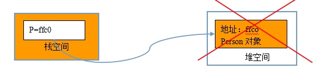

一、基本原理
（一）为什么要进行内存管理。
由于移动设备的内存极其有限，所以每个APP所占的内存也是有限制的，当app所占用的内存较多时，系统就会发出内存警告，这时需要回收一些不需要再继续使用的内存空间，比如回收一些不再使用的对象和变量等。
管理范围：任何继承 NSObjec t的对象，对其他的基本数据类型无效。
本质原因是因为对象和其他数据类型在系统中的存储空间不一样，其它局部变量主要存放于栈中，而对象存储于堆中，当代码块结束时这个代码块中涉及的所有局部变量会被回收，指向对象的指针也被回收，此时对象已经没有指针指向，但依然存在于内存中，造成内存泄露。
（二）对象的基本结构
每个OC对象都有自己的引用计数器，是一个整数表示对象被引用的次数，即现在有多少东西在使用这个对象。对象刚被创建时，默认计数器值为1，当计数器的值变为0时，则对象销毁。
在每个OC对象内部，都专门有4个字节的存储空间来存储引用计数器。
（三）引用计数器的作用
判断对象要不要回收的唯一依据就是计数器是否为0，若不为0则存在。
（四）操作
给对象发送消息，进行相应的计数器操作。
Retain消息：使计数器+1，改方法返回对象本身
Release消息：使计数器-1（并不代表释放对象）
retainCount消息：获得对象当前的引用计数器值
（五） 对象的销毁
当一个对象的引用计数器为0时，那么它将被销毁，其占用的内存被系统回收。
当对象被销毁时，系统会自动向对象发送一条dealloc消息，一般会重写dealloc方法，在这里释放相关的资源，dealloc就像是对象的“临终遗言”。一旦重写了dealloc方法就必须调用[super dealloc]，并且放在代码块的最后调用（不能直接调用dealloc方法）。
一旦对象被回收了，那么他所占据的存储空间就不再可用，坚持使用会导致程序崩溃（野指针错误）。
二、相关概念和使用注意
野指针错误：访问了一块坏的内存（已经被回收的，不可用的内存）。
僵尸对象：所占内存已经被回收的对象，僵尸对象不能再被使用。（打开僵尸对象检测）

空指针：没有指向任何东西的指针（存储的东西是0,null，nil），给空指针发送消息不会报错
注意：不能使用[p retaion]让僵尸对象起死复生。
三、内存管理原则
（一）原则
只要还有人在使用某个对象，那么这个对象就不会被回收；
只要你想使用这个对象，那么就应该让这个对象的引用计数器+1；
当你不想使用这个对象时，应该让对象的引用计数器-1；
（二）谁创建，谁release
-
如果你通过alloc,new,copy来创建了一个对象，那么你就必须调用release或者autorelease方法
-
不是你创建的就不用你去负责
（三）谁retain，谁release
只要你调用了retain，无论这个对象时如何生成的，你都要调用release
（四）总结
有始有终，有加就应该有减。曾经让某个对象计数器加1，就应该让其在最后-1。
四、内存管理代码规范
（一）只要调用了alloc，就必须有release(autorelease)
（二）Set方法的代码规范
（1）基本数据类型：直接复制
-（void）setAge:(int)age
{
_age=age;
}
（2）OC对象类型
-（void）setCar:(Car *)car
{
//1.先判断是不是新传进来的对象
If(car!=_car) {
//2 对旧对象做一次release
[_car release];//若没有旧对象，则没有影响
//3.对新对象做一次retain
_car=[car retain];
}
}
（三）dealloc方法的代码规范
（1）一定要[super dealloc]，而且要放到最后
（2）对self（当前）所拥有的的其他对象做一次release操作
-（void）dealloc
{
[_car release];
[super dealloc];
}
五、@property的参数
（1）内存管理相关参数
Retain:对对象release旧值，retain新值（适用于OC对象类型）
Assign:直接赋值（默认，适用于非oc对象类型,assign是指针赋值，不对引用计数操作，使用之后如果没有置为nil，可能就会产生野指针）
Copy:release旧值，copy新值
一个对象赋值给另一个对象的属性,当修改外面的对象的时候,想要里面的属性不发生改变,
copy
一个对象赋值给另一个对象的属性,当修改外面的对象的时候,希望里面的属性跟着发生改变,retain
（2）是否要生成set方法（若为只读属性，则不生成）
Readonly:只读，只会生成getter的声明和实现
Readwrite:默认的，同时生成setter和getter的声明和实现
（3）多线程管理（苹果在一定程度上屏蔽了多线程操作）
Nonatomic:高性能，一般使用这个
Atomic:低性能
（4）Set和get方法的名称
修改set和get方法的名称，主要用于布尔类型。因为返回布尔类型的方法名一般以is开头，修改名称一般用在布尔类型中的getter。
@propery(setter=setAbc,getter=isRich) BOOL rich;
BOOL b=p.isRich;// 调用
六、内存管理中的循环引用问题以及解决
案例：每个人有一张身份证，每张身份证对应一个人，不能使用`#import
的方式相互包含，这就形成了循环引用。
新的关键字：@class类名；—— 解决循环引用问题，提高性能。
@class仅仅告诉编译器，在进行编译的时候把后面的名字作为一个类来处理。
@class的作用：声明一个类，告诉编译器某个名称是一个类- 开发中引用一个类的规范
- 在.h文件中使用@class来声明类
- 在.m文件中真正要使用到的时候，使用#import来包含类中的所有东西
- 两端循环引用的解决方法 : 一端使用retain,一端使用assign（使用assign的在dealloc中也不用再release）
七、Autorelease
(一)基本用法
- 会将对象放到一个自动释放池中
- 当自动释放池被销毁时，会对池子里的所有对象做一次release
- 会返回对象本身
- 调用完autorelease方法后，对象的计数器不受影响（销毁时影响）
(二)好处
- 不需要再关心对象释放的时间
- 不需要再关心什么时候调用release
(三)使用注意
- 占用内存较大的对象，不要随便使用autorelease，应该使用release来精确控制
- 占用内存较小的对象使用autorelease，没有太大的影响
(四)错误写法
- 连续调用多次autorelease，释放池销毁时执行两次release(-1吗？)
- Alloc之后调用了autorelease，之后又调用了release。
(五)自动释放池
- 在ios程序运行过程中，会创建无数个池子，这些池子都是以栈结构（先进后出）存在的。
- 当一个对象调用autorelease时，会将这个对象放到位于栈顶的释放池中
(六)自动释放池的创建方式
1. ios 5.0以前的创建方式
NSAutoreleasePool *pool=[[NSAutoreleasePool alloc] init];
[pool release];//[pool drain];用于mac
2. ios5.0以后
@autoreleasepool
{//开始代表创建自动释放池
·······
}//结束代表销毁自动释放池
(七)Autorelease注意
- 系统自带的方法中，如果不包含
alloc new copy等，则这些方法返回的对象都是autorelease的，如[NSDate date]； - 开发中经常会写一些类方法来快速创建一个autorelease对象，创建对象时不要直接使用类名，而是使用self
（八）Autorelease应用（面试题）
- (void)viewDidLoad
{
[super viewDidLoad];
[self demo];
}
- (void)demo
{
int largeNumber = 10;
/**
1. 以下代码有问题吗？
2. 如果有，如何修改，有几种解决方法？
所有类方法创建的对象，都是autorelease的
问题所在：在循环体中，会重复为字符串开辟内存空间，如果循环次数过大，会把自动释放池撑满
所有自动释放的对象，在出了作用域之后，会被自动添加到最近一次创建的自动释放池中！
解决办法1：添加自动释放池，for循环之后统一释放，不会干扰主运行循环中的自动释放池！
解决方法2：当largeNumber非常大，无法保证一次循环的正常完成！
解决办法，就是在每次循环中都释放一次
*/
@autoreleasepool {
for (int i = 0; i < largeNumber; i++) {
NSString *str = [NSString stringWithFormat:@"Hello iOS - %d", i];
NSLog(@"%p", str);
str = [str uppercaseString];
NSLog(@"%p", str);
str = [str stringByAppendingString:@" abc"];
NSLog(@"%p", str);
NSLog(@"%@", str);
}
}
// 方法2，效率不高！慎用！
for (int i = 0; i < largeNumber; i++) {
@autoreleasepool {
NSString *str = [NSString stringWithFormat:@"Hello iOS - %d", i];
NSLog(@"%p", str);
str = [str uppercaseString];
NSLog(@"%p", str);
str = [str stringByAppendingString:@" abc"];
NSLog(@"%p", str);
NSLog(@"%@", str);
}
}
}
八、ARC内存管理机制
（一）ARC的判断准则：
只要没有强指针指向对象，对象就会被释放。
（二）指针分类：
（1）强指针：默认的情况下，所有的指针都是强指针，关键字strong
（2）弱指针：__weak关键字修饰的指针
声明一个弱指针如下：
__weak Person *p;
ARC中，只要弱指针指向的对象不在了，就直接把弱指针做清空操作。
__weak Person *p=[[Person alloc] init];//不合理，对象一创建出来就被释放掉，对象释放掉后，ARC把指针自动清零。
ARC中在property处不再使用retain,而是使用strong，在dealloc中不需要再[super dealloc]。
@property（nonatomic,strong）Dog *dog;// 意味着生成的成员变量_dog是一个强指针，相当于以前的retain。
如果换成是弱指针，则换成 weak，不需要加__。
（三）ARC的特点总结：
（1）不允许调用release，retain，retainCount
（2）允许重写dealloc,但是不允许调用[super dealloc]
（3）@property的参数：
- strong:相当于原来的retain（适用于OC对象类型），成员变量是强指针
- weak:相当于原来的assign,(适用于OC对象类型)，成员变量是弱指针
- assign：适用于非OC对象类型（基础类型）
- copy : 用于NSString/block
（四）补充
让程序兼容ARC和非ARC部分。转变为非ARC -fno-objc-arc 转变为ARC的， -f-objc-arc 。
ARC也需要考虑循环引用问题：一端使用retain，另一端使用assign。
提示：字符串是特殊的对象，但不需要使用release手动释放，这种字符串对象默认就是autorelease的，不用额外的去管内存。